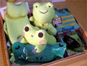
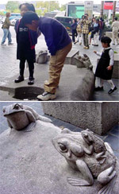
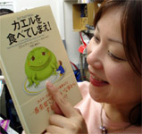
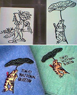
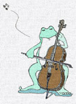
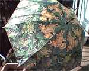
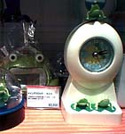
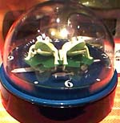

スカパーの衛星チューナーもっててなおかつSTAR dingioとラジオ契約している人は聴けます。放送予定は１月１７日金曜日２２時半から２３時までです。
ちゅーことで、今年もばんばんカエル化するぞおおお。大王から、カエルお年玉をプレゼントします。お年玉「梅」「松」「竹」を、それぞれ募集します。カエルグッズ好きなお子さま、または精神構造がお子さまのカエラーは、どんどん応募してくれえええええええ。
先着３名様に、大王特選のカエル箱をプレゼントします。メールくれえええ。大王様へのメール

【全国かえる奉賛会】えーっ！韓国がサッカー強いのは、カエルを街頭において、日頃からカエルのように跳び、カエルのように泳ぐよう、子供の時代からカエルに馴染ませていたからなんだああああああああ。日本も韓国のすぐれたカエル主義を取り入れて、公園と街頭をカエル造形物で埋め尽くそうではないかあああああ。それにしても楽しそうだなああああああ。

【福岡発すみ同志記者】会社の上で本を大安売りしていたので４００円で買いました。『カエルを食べてしまえ！』という物騒な本です。読んだけど、よくわからない。カエルって嫌なものの象徴で、嫌なことから先に済ませようってことなのかなあ。でもねー。食べれないよね。【全国かえる奉賛会】えーっ。カエルって一番やっかいなことの象徴なんだってさあああ。そんなことはないよねーっ。『カエルになってしまえ！』てえ本を出して、やなことはやんないに限るし、ふだんは、のろのろ、ぐずぐず、ぐえええええって、鳴いているけれども。いったん、こうと決めたら、びよおおおおおおおおおおおおん！と飛跳ねて、水の中もすいすい泳げることが肝心なり。そう教えるんだけどなーっ。

【帝都発かえるひとすじ４０年！かえるは地球を救う！！ケロリカ同志記者】東京上野に御座います東京国立博物館へ行った折り、ミュージアムショップを覗いて参りました。するとなんと東博オリジナルグッズとして、鳥獣戯画のかえる様が店内に溢れかえっているではありませんか！Ｔシャツ、トートバッグ、ハンカチ、スタンプ、便箋、はがき等々々・・・。
東博にはあまたの国宝・重文が収蔵されているにもかかわらず、グッズのデザインにかえる様が選ばれているとは、先行き不安なニュースばかりの我が日本も、まんざら捨てたものではないと、深く感銘を受けた次第で御座います。
１２月２３日（祝）午後２時より新宿のTheater POOにて草野心平作、西村正平構成で「蛙の四季」を上演しました。生前、草野心平氏が、大変お気に入りだったというアレンジを、女性４人で群読いたしたのです。
「蛙の四季」で１時間弱の作品になっています。ほかのものも合わせて、１時間３０分ほどの舞台でした。詳しくはこちらをご覧ください。
そのキャラクターは博報堂のクリエイターである西塚克之氏によってデザインされたそうです。
【全国かえる奉賛会】やっと出たかア！銀行業界は再編成の結果、わけがわかんない名前になったへんてこりんな銀行がたくさんできて、緑色をテーマにしていた、三和銀行とか、富士銀行が消滅して悲しい思いをしていたのであるううう。あおぞら銀行かああ。福岡には１軒しかないぞおお。
カエルを主役キャラにしたら、預金高はどんどん増えるぞ！銀行名も、カエル銀行にしようではないかああああああああああ。

【日本発ひろよ同志記者】ＨＰで子供向けにかえるをキャラにした「エコロジー」のサイトを立ち上げました。是非ご覧くださいませ。 第１話までは私めが自らイラストおこしておりましたが、２話からは諸事情で別の人間が描いている都合上、絵柄が違っちゃってますが・・・。今後はショールームの環境説明パネルにもかえるを登場させ、 「コクヨかえる化プロジェクト」を推進する予定です。
【全国カエル奉賛会】大王が子供の頃から、コクヨはとおおおっても大好きな文具メーカーなのであるうう。そこがカエル化するなんて、こんなにうれしいことはないぞおおお。



【千葉発かえるひとすじ４０年！かえるは地球を救う！！ケロリカ同志記者】ケロリカの自宅近所に御座います“ショッピングセンター・ららぽ〜と”内のソニープラザで、これからの季節、贈答にもぴったりなかえる様時計を発見いたしました。昨今こういった雑貨店で、かえる様のお姿をお見かけする機会は多う御座いますけれど、なかなか私どものような年期の入ったセレブなカエラーの眼鏡に適うものは御座いませんね。
しかし今回のかえる様時計は、贈り物にもよし、ビジネスシーンにもよし、もちろん日常生活にかえる様の潤いを加えるのにもよし、という、優れ物で御座います。
秒針の代わりにかえる様の口がパクパク動く、その名も『パクパク時計』。丸型平面置きタイプと、縦型タイプ、そしてパクパクしないデジタルタイプが御座いました。
何を隠そう、ケロリカは４年前勤め先を辞す際、餞別にこの『パクパク時計縦型』を戴いてからずっと愛用しているので御座います。長年の使用にもかかわらず時刻に一分の狂いもない、優れた製品であることを僭越ながら私自ら保証させて戴きます。
メールマガジン解除


かえる古新聞過去に取り上げた記事を見出し付きで一覧したい人は、ここをクリック◆創刊号を見る◆先週号を見る◆話題の号を見る◆かえる新聞の昔を読む
|
私も入っています。。全国かえる奉賛会
大王様に会うには、このバナーをクリック。ずっと奥に写真館があるぞ。全国かえる奉賛会に入会するには、自分のホームページのどこかに、下の部分を追加するとバナーがリンク付きで表示されるぞ。どんどん入会しましょー |


|